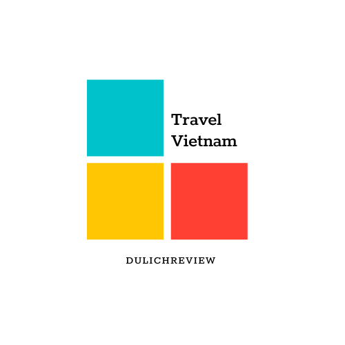

Miền Bắc
Miền Trung
Miền Nam
Món ngon
Trải nghiệm
Liên hệ
Góc nhìn 360°
Những điểm đến hấp dẫn
Đảo Tuần Châu
Đảo Tuần Châu được mệnh danh là thiên đường quyến rũ nhất hành trình du lịch Hạ Long. Lựa chọn tham gia Tour Hạ Long dừng chân nơi đây, hứa hẹn bạn sẽ có nhiều trải nghiệm cực kỳ hấp dẫn. Đảo Tuần Châu có vị trí cách trung tâm thành phố Hạ Long khoảng 2km với diện tích lên đến 400ha. Nhờ điều kiện thuận lợi cả về đường thủy và đường bộ, vì thế việc di chuyển đến đảo diễn ra một cách khá dễ dàng.
Du lịch Nha Trang
Thành phố biển Nha Trang đã trở thành một điểm đến du lịch không thể bỏ qua của các bạn trong và ngoài nước. Một điểm đến không thể bỏ lỡ khi tới thành phố xinh đẹp này chính là đảo Bình Ba hay còn được nhắc đến với cái tên đảo Tôm Hùm. Đảo này có diện tích nhỏ chỉ trên 3km2, trước đây ít người biết đến hòn đảo này vì đây là một đảo quân sự, hạn chế người ngoài vào nơi này.
Du lịch Đồng Tháp
Đây là khu du lịch sinh thái đặc trưng của Long An nói riêng và của Nam Bộ nói chung, không chỉ hấp dẫn du khách bởi khu rừng tràm rộng lớn mà còn khiến mọi người ngỡ ngàng và mê mẩn bởi những cánh đồng sen ngút ngàn.Nếu bạn đến đây vào mùa nước nổi, khoảng tháng 8 đến 11 sẽ có dịp ngắm sen nở, hương thơm dịu dàng của sen sẽ xoa dịu mọi căng thẳng của bạn.
Những món ăn không thể bỏ lỡ
Food tour Hải Phòng, ăn hoài vẫn chưa thấy hết!
Những năm gần đây, những món ăn Hải Phòng nổi tiếng rần rần tại thủ đô, nào là dừa non, dừa dầm lá dứa, bánh mì cay hay bánh đa cua,... quá nhiều món hợp khẩu vị và hợp túi tiền cho anh em. Chính vì vậy mà nhiều người 'lặn lội' đến tận Hải Phòng để khám phá ẩm thực của thành phố này.
Đi dọc miền Trung thưởng thức món ngon vùng biển
Có thể nói, khi nhắc đến miền Trung, du khách thập phương không khỏi ngỡ ngàng về một nền ẩm thực đa dạng với vô vàn món ăn ngon, đặc sắc cả về hương vị lẫn cách bài trí, chế biến.
Bỏ túi những miệt vườn “trĩu trịt” ở quanh Sài Gòn
Những miệt vườn sai “trĩu trịt” của sông nước miền Tây hẳn sẽ làm xiêu lòng du khách mỗi lần đặt chân tới.Cùng với không gian trong lành, thoáng đãng là những vườn trái cây xanh mượt, là ao hồ, kênh rạch chằng chịt, thực sự là một điểm đến lý tưởng để thả hồn vào thiên nhiên, đất trời.
Theo chân phượt thủ
Nhị Đặng - Travel blogger dám nghỉ việc để du lịch
Không chỉ là những thước phim tuyệt đẹp về những vùng đất mình đi qua, câu chuyện của Blogger Nhị Đặng càng thu hút hơn khi đây là chuyện của cô gái trẻ sẵn sàng từ bỏ công việc ổn định để chọn lấy những cuộc hành trình tới khắp nơi mà mình muốn.
Từng ngồi bán hoa tươi đến tận sáng mùng 1
Khoai Lang Thang (tên thật là Đinh Võ Hoài Phương, 29 tuổi) sở hữu kênh YouTube hơn 1,1 triệu theo dõi, xây dựng hơn 30 sân chơi cho những ngôi trường khó khăn ở khắp mọi miền đất nước.
Chàng trai Việt Nam đầu tiên chinh phục Bắc Cực
Vượt qua 300 km với điều kiện khắc nghiệt, Hoàng Lê Giang đã trở thành người Việt Nam đầu tiên hoàn thành hành trình chinh phục Bắc Cực.Vượt qua 300 km với điều kiện khắc nghiệt, Hoàng Lê Giang đã trở thành người Việt Nam đầu tiên hoàn thành hành trình chinh phục Bắc Cực.